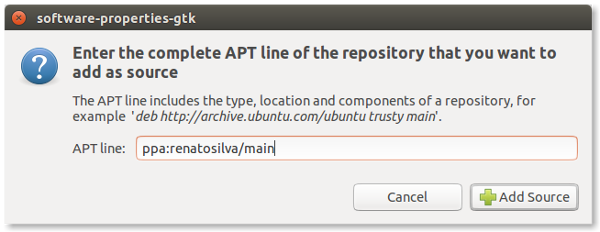
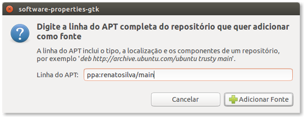
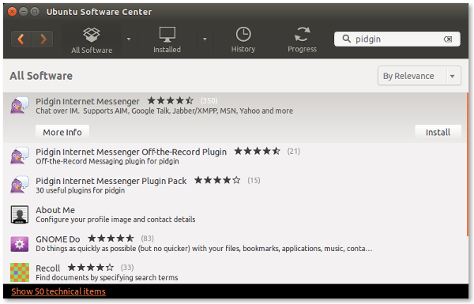
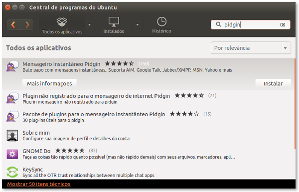
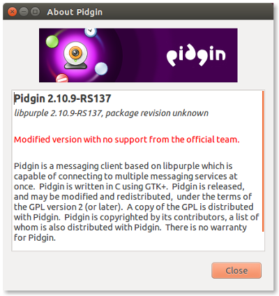

Current release
Versão atual
- Refined appearance including new status icons
Aparência aprimorada incluindo novos ícones de status
Windows
Single click support on system tray
Clique simples na bandeja do sistemaWindows
Better Unicode support
Melhor suporte a Unicode- See all features
Ver todas as funcionalidades
For Windows
Para Windows
For Ubuntu
Para Ubuntu
Source code
Código fonte
Development
Desenvolvimento
You can download the current release or test next one, which is also available as 64-bit.
Note that the 64-bit version does not include SILC or Perl. It also requires 64-bit versions of the third-party plugins.
Você pode baixar a versão atual ou testar a próxima, também disponível em 64 bits.
Note que a versão de 64 bits não inclui SILC nem Perl, e também requer versões de 64-bits dos plugins adicionais.
Use the following steps for installing Pidgin++ on Ubuntu 14.04. Please note that Pidgin++ cannot be
installed in conjunction with the original Pidgin package. This is because the package name has not been changed.
Use os seguintes passos para instalar o Pidgin++ no Ubuntu 14.04. Note que o Pidgin++ não pode ser
instalado em conjunto com o pacote original do Pidgin. Isso porque o nome do pacote não foi alterado.
- Add the repository ppa:renatosilva/main to your software sources using the repositories manager.

Adicione o repositório ppa:renatosilva/main à sua lista de fontes de aplicativos usando o gerenciador de repositórios.

- Open the software center, search for pidgin, then click install.

Abra a central de programas, procure por pidgin e clique em instalar.

- After installation, check if version is correctly reported under Help > About. Both Pidgin and libpurple should have the RS suffix in version, thus confirming that this is Pidgin++.

Após a instalação, verifique se é reportada a versão correta em Ajuda > Sobre. Tanto o Pidgin quanto a libpurple devem ter o sufixo RS na versão, confirmando assim que se trata do Pidgin++.